Quiz de treino CG: banco de questões do professor, com respostas
77 questões únicas tiradas das 122 tentativas do Quiz de Treino de 2021 (INE5420). Alternativas de versões diferentes da mesma questão foram juntadas, então algumas têm mais opções que o original e duas de escolha única têm duas certas. A alternativa certa está em verde, e "Por quê" explica. O professor não repete questão de um ano para o outro: isto serve para treinar formato e conceito.
- Window, viewport e clipping: Q01–Q16
- Transformações, coordenadas homogêneas e geometria 3D: Q17–Q35
- Projeções e pipeline de visualização 3D: Q36–Q45
- Curvas e superfícies: Q46–Q46
- Iluminação, shading, raytracing e radiosidade: Q47–Q59
- Rasterização, z-buffer, aliasing e texturas: Q60–Q68
- APIs, engines e outros: Q69–Q73
- Processamento de imagens (POSCOMP): Q74–Q77
Window, viewport e clipping
É um exemplo de um algoritmo de recorte de polígonos:
- a) Nicholl-Lee-Nicholl
- b) Cohen-Sutherland
- c) Kruskal
- d) Liang-Barsky
- ✓ e) Sutherland-Hodgeman
- f) Gauss-Seidel
- g) Runge-Kutta
- h) Gauss-Jacobi
- ✓ i) Weiler-Atherton
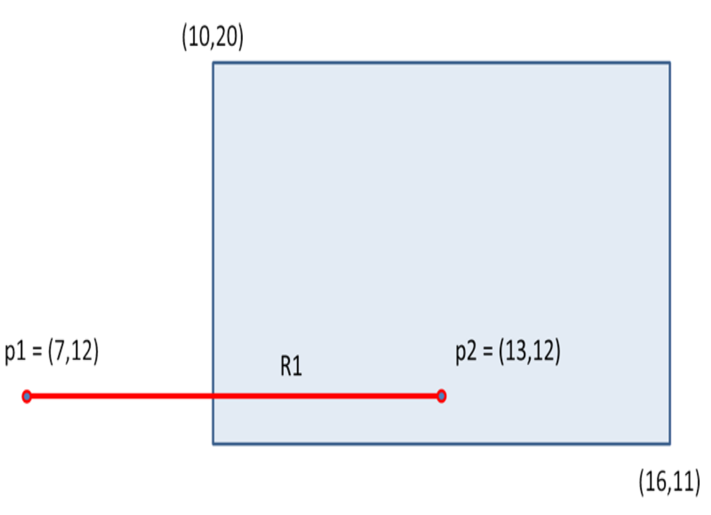
Considere o mundo 2D da figura acima, contendo um segmento de reta e uma Window com limites paralelos aos eixos de coordenadas, ambos representados em coordenadas de mundo.
Considere ainda que esta window será mapeada sobre uma viewport de tamanho 320x180 pixels e que a origem do sistema de coordenadas dessa viewport é (10, 10), e responda à pergunta abaixo.
Lembre-se que a orientação dos eixos de coordenadas de Viewport é peculiar a essa estrutura.
Após a clipagem, qual será o valor da coordenada Y do ponto p2 da reta clipada, quando representado no sistema de coordenadas de Viewport? Use apenas inteiros (positivos e negativos) para a sua resposta.
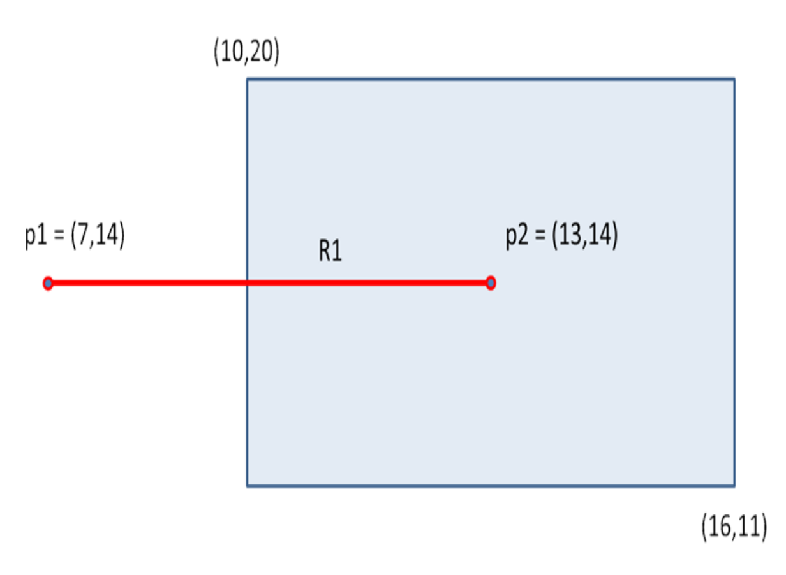
Considere o mundo 2D da figura acima, contendo um segmento de reta e uma Window com limites paralelos aos eixos de coordenadas, ambos representados em coordenadas de mundo, e responda à pergunta abaixo.
Considere também que para nossa implementação do sistema de coordenadas de Window estamos utilizando coordenadas normalizadas com origem no window center (WC) e com domínio = [-1, 1].
Após a clipagem, qual será o valor da coordenada Y do novo ponto p1' da reta clipada, quando representado no sistema de coordenadas de Window? Use apenas inteiros (positivos e negativos) para a sua resposta.
O algoritmo de recorte de retas baseado em códigos de regiões é:
- a) Weiler-Atherton
- b) Gauss-Jacobi
- c) Liang-Barsky
- d) Sutherland-Hodgeman
- ✓ e) Cohen-Sutherland
- f) Gauss-Seidel
- g) Runge-Kutta
- h) Nicholl-Lee-Nicholl
Considere o mundo 2D da figura acima, contendo um segmento de reta e uma Window com limites paralelos aos eixos de coordenadas, ambos representados em coordenadas de mundo, e responda à pergunta abaixo.
Considere também que para nossa implementação do sistema de coordenadas de Window estamos utilizando coordenadas normalizadas com origem no window center (WC) e com domínio = [-1, 1].
Após a clipagem, qual será o valor da coordenada Y do ponto p2 da reta acima, quando representado no sistema de coordenadas de Window? Use apenas inteiros (positivos e negativos) para a sua resposta.
Considere o mundo 2D da figura acima, contendo um segmento de reta e uma Window com limites paralelos aos eixos de coordenadas, ambos representados em coordenadas de mundo.
Considere ainda que esta window será mapeada sobre uma viewport de tamanho 320x180 pixels e que a origem do sistema de coordenadas dessa viewport é (10, 10), e responda à pergunta abaixo.
Lembre-se que a orientação dos eixos de coordenadas de Viewport é peculiar a essa estrutura.
Após a clipagem, qual será o valor da coordenada Y do novo ponto p1' da reta clipada, quando representado no sistema de coordenadas de Viewport? Use apenas inteiros (positivos e negativos) para a sua resposta.
Considere o mundo 2D da figura acima, contendo um segmento de reta e uma Window com limites paralelos aos eixos de coordenadas, ambos representados em coordenadas de mundo, e responda à pergunta abaixo.
Considere também que para nossa implementação do sistema de coordenadas de Window estamos utilizando coordenadas normalizadas com origem no window center (WC) e com domínio = [-1, 1].
Após a clipagem, qual será o valor da coordenada X do novo ponto p1' da reta clipada, quando representado no sistema de coordenadas de Window? Use apenas inteiros (positivos e negativos) para a sua resposta.
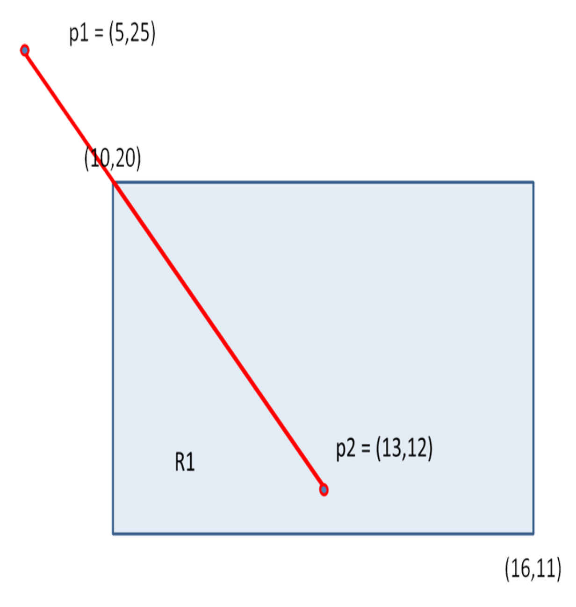
Considere a imagem acima, o algoritmo de recorte de Cohen Sutherland e a seguinte ordem de RCs: RC[1]: acima RC[2]: abaixo RC[3]: direita RC[4]: esquerda Se aplicarmos Cohen-Sutherland à reta acima, os RCs de p1 e p2 serão:
- a) p1= [0 0 1 0] e p2 = [0 0 0 1]
- b) p1= [1 0 0 0] e p2 = [0 0 0 1]
- c) p1= [1 0 1 0] e p2 = [1 1 1 1]
- d) p1= [0 1 1 0] e p2 = [1 1 1 1]
- e) p1= [1 0 0 1] e p2 = [1 1 1 1]
- f) p1= [0 1 1 0] e p2 = [0 0 0 0]
- g) p1= [1 0 0 0] e p2 = [0 0 0 0]
- ✓ h) p1= [1 0 0 1] e p2 = [0 0 0 0]
Considere o mundo 2D da figura acima, contendo um segmento de reta e uma Window com limites paralelos aos eixos de coordenadas, ambos representados em coordenadas de mundo, e responda à pergunta abaixo.
Considere também que para nossa implementação do sistema de coordenadas de Window estamos utilizando coordenadas normalizadas com origem no window center (WC) e com domínio = [-1, 1].
Após a clipagem, qual será o valor da coordenada X do ponto p2 da reta acima, quando representado no sistema de coordenadas de Window? Use apenas inteiros (positivos e negativos) para a sua resposta.
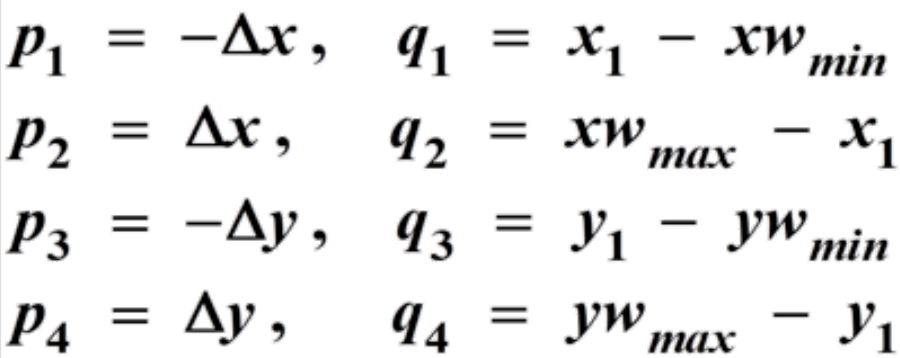
O algoritmo de recorte de retas baseado no cálculo e comparação de um conjunto de parâmetros pk e qk, definidos como na figura acima, é:
- a) Weiler-Atherton
- b) Nicholl-Lee-Nicholl
- ✓ c) Liang-Barsky
- d) Runge-Kutta
- e) Gauss-Seidel
- f) Sutherland-Hodgeman
- g) Gauss-Jacobi
- h) Cohen-Sutherland
Considere o mundo 2D da figura acima, contendo um segmento de reta e uma Window com limites paralelos aos eixos de coordenadas, ambos representados em coordenadas de mundo.
Considere ainda que esta window será mapeada sobre uma viewport de tamanho 320x180 pixels e que a origem do sistema de coordenadas dessa viewport é (10, 10), e responda à pergunta abaixo.
Lembre-se que a orientação dos eixos de coordenadas de Viewport é peculiar a essa estrutura.
Após a clipagem, qual será o valor da coordenada X do ponto p2 da reta clipada, quando representado no sistema de coordenadas de Viewport? Use apenas inteiros (positivos e negativos) para a sua resposta.
Considere a imagem acima, o algoritmo de recorte de Cohen Sutherland e a seguinte ordem de RCs: RC[1]: acima RC[2]: abaixo RC[3]: direita RC[4]: esquerda Se aplicarmos Cohen-Sutherland à reta acima, os RCs de p1 e p2 serão:
- a) p1= [0 0 0 1] e p2 = [1 1 1 1]
- b) p1= [1 0 0 0] e p2 = [0 0 0 1]
- c) p1= [0 0 1 0] e p2 = [0 0 0 1]
- d) p1= [0 0 1 0] e p2 = [1 1 1 1]
- e) p1= [1 0 0 0] e p2 = [0 0 0 0]
- f) p1= [0 0 1 0] e p2 = [0 0 0 0]
- g) p1= [1 0 1 0] e p2 = [1 1 1 1]
- ✓ h) p1= [0 0 0 1] e p2 = [0 0 0 0]
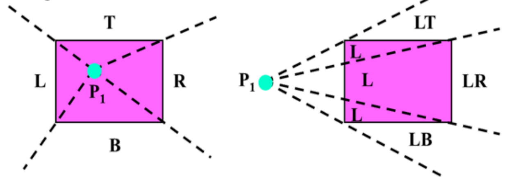
O algoritmo de recorte de retas baseado em comparação dos coeficientes angulares da reta a ser clipada com os coeficientes angulares de um conjunto de retas de referência é:
- a) Sutherland-Hodgeman
- b) Gauss-Seidel
- ✓ c) Nicholl-Lee-Nicholl
- d) Liang-Barsky
- e) Gauss-Jacobi
- f) Cohen-Sutherland
- g) Weiler-Atherton
- h) Runge-Kutta
[POSCOMP 2002] Considere uma cena representada no sistema de referência do universo (SRU), uma window definida pelo par de coordenadas (0,0)-(100,100) e uma viewport definida pelo par de coordenadas (20,30)-(300,100). Considere ainda que as coordenadas que definem window e viewport correspondem, respectivamente, aos limites inferior esquerdo e superior direito de ambas. Analise as afirmativas abaixo levando em consideração os conceitos clássicos de window e viewport e assinale a alternativa correta.
I – Window e viewport estão definidas no SRU.
II – No processo de mapeamento desta window para esta viewport haverá modificação na relação de aspecto.
III – O mapeamento da window redefinida pelo par de coordenadas (0,0) – (50,50) para a mesma viewport (20,30)-(300,100) corresponde a uma operação de zoom out sobre o mesmo universo.
- a) As afirmativas II e III são verdadeiras
- ✓ b) As alternativas I e III são falsas
- c) Apenas a afirmativa III é verdadeira
- d) As alternativas I e II são verdadeiras
- e) As alternativas I e II são falsas
Considerando as transformações entre sistemas de coordenadas 2D e o processo de recorte, analise as assertivas abaixo:
I. Denomina-se window a área do universo que será mapeada para a tela, e viewport a área de tela que será utilizada nesse processo.
II. Se as razões entre a largura e altura da window e a largura e a altura da viewport não forem as mesmas, ocorrerá uma mudança não uniforme de escala.
III. O recorte de linhas (clipping) pode ser feito tanto no sistema de coordenadas do universo como no da tela. Quais estão corretas?
- a) Apenas I e III
- b) Apenas III
- c) Apenas I
- ✓ d) I, II e III
- e) Apenas II
[POSCOMP 2004] Considere: todas as etapas do processo de visualização de objetos 2D; uma window delimitada pelo par de coordenadas (0,0)-(60,60); uma viewport delimitada pelo par de coordenadas (0,0)-(100,80); e os seguintes parâmetros de instanciamento, aplicados nesta ordem: (1º) Escala em X: 1, Escala em Y: 2; (2º) Rotação: 0º; (3º) Translação X: 10, Translação Y: 0
Assumindo que, nas opções apresentadas abaixo, os retângulos pontilhados representam a viewport, qual dos desenhos a seguir mais se parece com o desenho do triângulo cuja definição no sistema de referência do universo é dada pelos pares de coordenadas (10,0)-(10,30)-(40,0)? Considere ainda que as coordenadas que definem window e viewport correspondem, respectivamente, aos limites inferior esquerdo e superior direito de ambas.
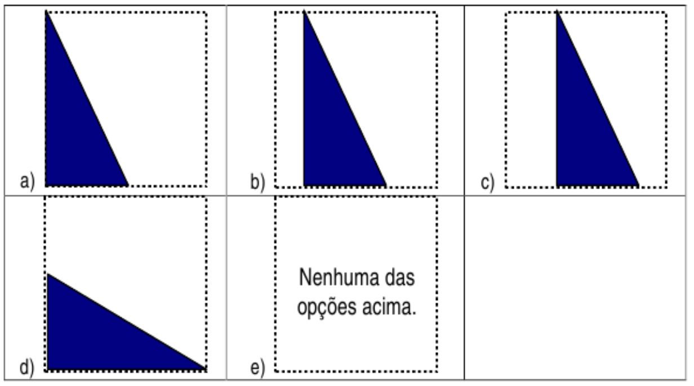
- a) Opção a
- b) Opção b
- c) Opção e
- d) Opção d
- ✓ e) Opção c
Transformações, coordenadas homogêneas e geometria 3D
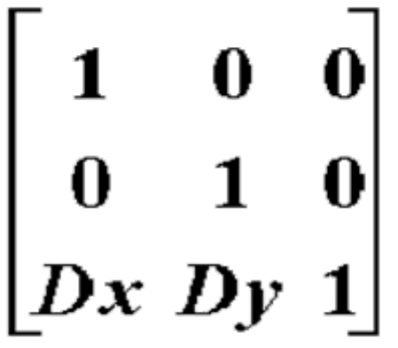
A matriz acima é:
- a) Uma matriz de Rotação para um Mundo 2D quando representado em Coordenadas Homogêneas.
- b) Uma matriz de Rotação 3D.
- c) Uma matriz de Translação 3D.
- ✓ d) Uma matriz de Translação para um Mundo 2D quando representado em Coordenadas Homogêneas.
- e) Uma matriz de Escalonamento para um Mundo 2D quando representado em Coordenadas Homogêneas.
- f) Uma matriz de Escalonamento 3D.
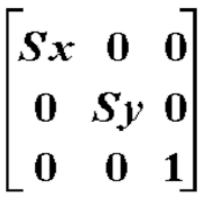
Acerca de Sx e Sy na matriz acima é possível afirmar que:
- a) Sx e Sy representam os fatores de deslocamento de uma translação 2D realizada em coordenadas homogêneas. Eles são obtidos das projeções em x e y dos resultados da equação básica do deslocamento S(t) = S0 + Vt e usados muito em games de corrida.
- b) É uma matriz de Rotação 2D representada em Coordenadas Homogêneas.
- c) É uma matriz de Rotação 3D.
- ✓ d) Sx e Sy representam os fatores de escala de um escalonamento 2D realizado em coordenadas homogêneas.
- e) Sx e Sy representam os fatores de escala de um escalonamento 3D quando o fator de escala em z é unitário, isto é, o objeto é distorcido em x e y e não se altera ao longo de z.
- f) Sx e Sy representam os fatores de deslocamento de uma translação 3D quando o deslocamento em z = 1. Eles são obtidos das projeções em x e y dos resultados da equação básica do deslocamento S(t) = S0 + Vt e usados muito em games de corrida.
Inspirado em [Computer Graphics Trivial Quiz 1996-98 - University College London] Se desejarmos realizar uma translação 3D pelo vetor de deslocamento D = [1 2 3], a matriz de transformação, expressa em Coordenadas Homogêneas, será:
- ✓ a)
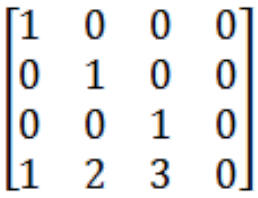
- b)
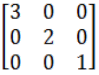
- c)
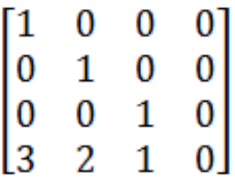
- d)
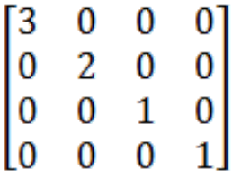
- e)
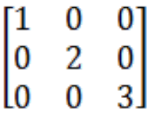
- f)
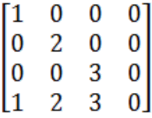
- g)
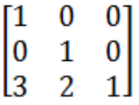
- h)
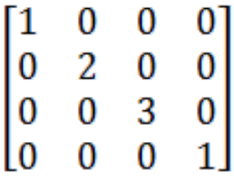
- i)
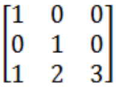
Considere a expressão abaixo:
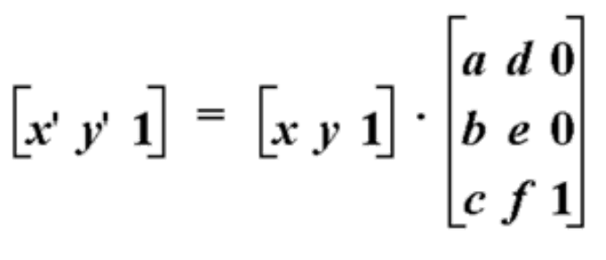
e assinale as alternativas verdadeiras:
- a) Usando uma representação em Coordenadas Homogêneas podemos representar apenas as operações geométricas de Rotação como uma multiplicação de matrizes (produto escalar), onde uma é um ponto do objeto ponto e a outra a matriz de transformação, conforme a expressão acima.
- ✓ b) Na expressão acima a constante W=1 em [x y W] e [x' y' W] está correta: o valor de W é chamado de fator de escala e deve ser um valor constante e diferente de 0, pois uma fator de escala = 0 levaria a divisões por zero e não deve ser usado.
- ✓ c) Usando uma representação em Coordenadas Homogêneas podemos realizar toda operação geométrica sobre um ponto como uma multiplicação de matrizes, onde uma é o ponto e a outra a matriz de transformação, conforme a expressão acima.
- d) Na expressão acima a constante W em [x y W] e [x' y' W] está incorreta: o valor de W deve ser sempre 0 pois a dimensão adicional das Coordenadas Homogêneas é ajustada à origem do sistema de coordenadas original do dado.
- e) Usando uma representação em Coordenadas Homogêneas podemos representar apenas as operações geométricas de Escalonamento como uma multiplicação de matrizes (produto escalar), onde uma é um ponto do objeto ponto e a outra a matriz de transformação, conforme a expressão acima.
- ✓ f) Na expressão acima a constante W=1 em [x y W] e [x' y' W] está correta: o valor de W é chamado de fator de escala e, para efeitos computacionais, um fator de escala de 1 é a melhor escolha pois não altera x e y.
- ✓ g) A expressão acima descreve uma transformação genérica usando uma representação em Coordenadas Homogêneas de um Mundo 2D.
- h) A expressão acima descreve uma transformação genérica usando uma representação em Coordenadas Homogêneas de um Mundo 3D.
Inspirado em [Computer Graphics Trivial Quiz 1996-98 - University College London] Se desejarmos realizar um escalonamento 3D pelo vetor de escala S = [1 2 3], a matriz de transformação, expressa em Coordenadas Homogêneas, será:
- a)
- b)
- c)
- d)
- e)
- ✓ f)
- g)
- h)
- i)
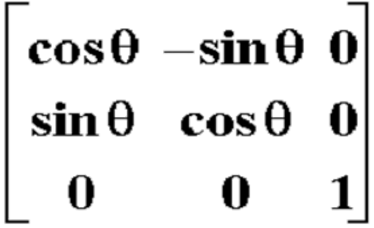
A matriz acima é:
- ✓ a) Uma matriz de Rotação para um Mundo 2D quando representado em Coordenadas Homogêneas.
- b) Uma matriz de Translação 3D.
- c) Uma matriz de Rotação 3D.
- d) Uma matriz de Escalonamento para um Mundo 2D quando representado em Coordenadas Homogêneas.
- e) Uma matriz de Escalonamento 3D.
- f) Uma matriz de Translação para um Mundo 2D quando representado em Coordenadas Homogêneas.
Considere que: sen(90º) = 1 e cos(90º) = 0.
Qual a matriz de transformação, em Coordenadas Homogêneas, necessária para realizar uma rotação 3D de 90º de um objeto em torno do eixo Z?
- a)
- b)
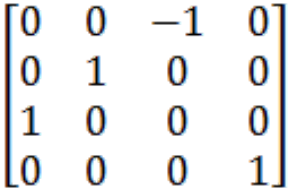
- c)
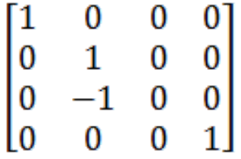
- d)
- ✓ e)
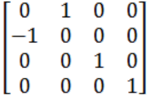
- f)
- g)
- h)
- i)
Considere o método de mapeamento de coordenadas de um mundo 3D para um sistema de referência de Coordenadas Homogêneas comumente utilizado em Computação Gráfica. É verdade afirmar que:
- a) Sistema de Coordenadas Homogênas é um outro nome para Sistema de Coordenadas Normalizado
- b) Vamos adicionar apenas uma nova dimensão adicional às coordenadas, que passarão a ser representadas por pontos 4D: [X Y Z W], onde W só pode possuir um valor constante = 1 e nenhum outro valor.
- c) Vamos adicionar apenas uma nova dimensão adicional às coordenadas, que passarão a ser representadas por pontos 4D: [X Y Z W], mas isso só pode ser feito depois de normalizar as coordenadas do mundo para o intervalo [0, 1].
- ✓ d) Vamos adicionar apenas uma nova dimensão adicional às coordenadas, que passarão a ser representadas por pontos 4D: [X Y Z W], onde W deve possuir um valor constante diferente de 0. Por questões de simplicidade usamos W=1.
- e) Vamos adicionar apenas uma nova dimensão adicional às coordenadas, que passarão a ser representadas por pontos 4D: [X Y Z W], onde W tem um valor que é uma função da norma de [x y z].
- f) Vamos adicionar apenas uma nova dimensão adicional às coordenadas, que passarão a ser representadas por pontos 4D: [X Y Z W], onde W tem um valor constante = 0.
- g) Vamos sempre duplicar as dimensões das coordenadas x y z, que passarão a ser representadas por pontos 6D: [x y z X Y Z], onde X, Y e Z = 1.
- h) Vamos adicionar apenas uma nova dimensão adicional às coordenadas, que passarão a ser representadas por pontos 4D: [X Y Z W], onde W tem um valor constante = -1.
A matriz acima é:
- a) Uma matriz de Escalonamento 3D.
- b) Uma matriz de Rotação para um Mundo 2D quando representado em Coordenadas Homogêneas.
- c) Uma matriz de Rotação 3D.
- d) Uma matriz de Translação para um Mundo 2D quando representado em Coordenadas Homogêneas.
- ✓ e) Uma matriz de Escalonamento para um Mundo 2D quando representado em Coordenadas Homogêneas.
- f) Uma matriz de Translação 3D.
Considere que: sen(90º) = 1 e cos(90º) = 0.
Qual a matriz de transformação, em Coordenadas Homogênas, necessária para realizar uma rotação 3D de 90º de um objeto em torno do eixo X?
- a)
- b)
- c)
- d)
- e)
- ✓ f)
- g)
- h)
- i)
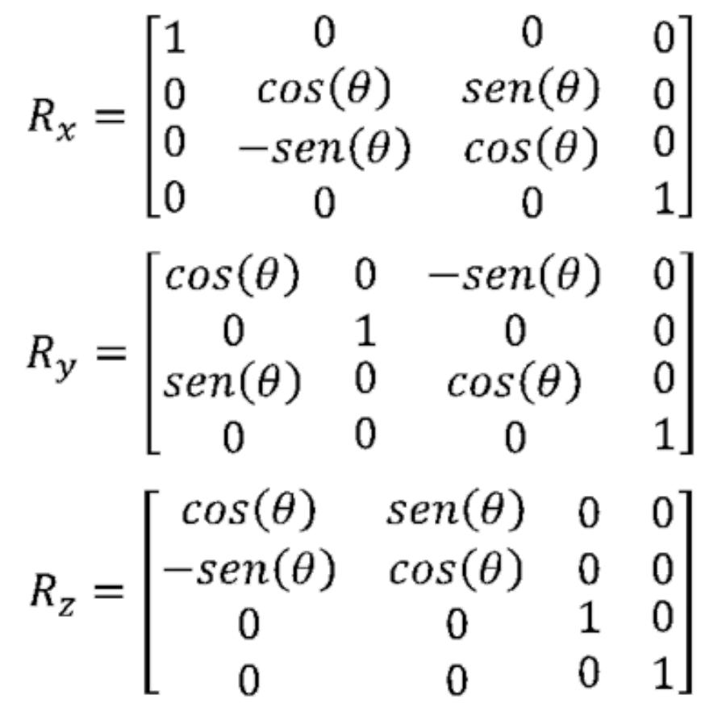
Inspirado em [Computer Graphics Trivial Quiz 1996-98 - University College London]
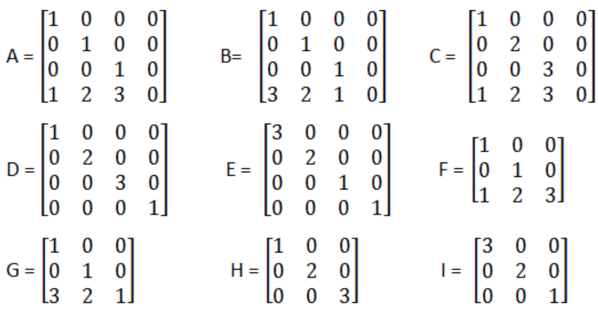
Considere as matrizes de transformação acima. Se desejarmos realizar uma translação pelo vetor de deslocamento D = [1 2 3], a matriz de transformação, expressa em Coordenadas Homogêneas, será:
- ✓ a) A
- b) H
- c) G
- d) D
- e) B
- f) E
- g) Tanto A quanto B estão corretas pois a ordem das dimensões não importa nesta transformação.
- h) C
- i) Tanto D quanto E estão corretas pois a ordem das dimensões não importa nesta transformação.
- j) F
- k) I
Considere que: sen(90º) = 1 e cos(90º) = 0.
Qual a matriz de transformação, em Coordenadas Homogêneas, necessária para realizar uma rotação 3D de 90º de um objeto em torno do eixo Y?
- a)
- b)
- ✓ c)
- d)
- e)
- f)
- g)
- h)
- i)
POSCOMP 2016 - QUESTÃO 57 – Considerando transformações geométricas em duas (2D) e três (3D) dimensões, analise as assertivas abaixo:
I. Coordenadas homogêneas são necessárias para representar a transformação de translação em uma matriz.
II. Se forem realizadas uma transformação de escala uniforme e uma de rotação em 2D, a ordem das transformações alterará o resultado final.
III. Se forem realizadas duas transformações de rotação em 3D: uma de 90 graus em torno do eixo X, e outra de 90 graus em torno do eixo Z, o resultado final não será afetado pela ordem das transformações. Quais estão corretas?
- a) Apenas I e III.
- b) Apenas III.
- c) Apenas II e III.
- d) Apenas II.
- ✓ e) Apenas I.
[POSCOMP 2010] Considere um objeto em 3D ancorado no seu centro de massa p = (xc, yc, zc). Qual a transformação necessária para rotacioná-lo em Θ graus, contra relógio, ao redor do eixo x, sem alterar a sua posição no espaço? Assuma que a matriz T realiza translações, a matriz R realiza rotações de Θ graus ao redor do eixo x, contra relógio.
- a) T(−p).Rx(Θ)
- ✓ b) T(p).Rx(Θ).T(−p)
- c) R(Θ).T(−p)
- d) T(−p).Rx(Θ).T(p)
- e) T(p).Rx(Θ).T(p)
[POSCOMP 2014 - Questão 58] Considere as matrizes de transformações geométricas A e B e as coordenadas homogêneas a seguir.
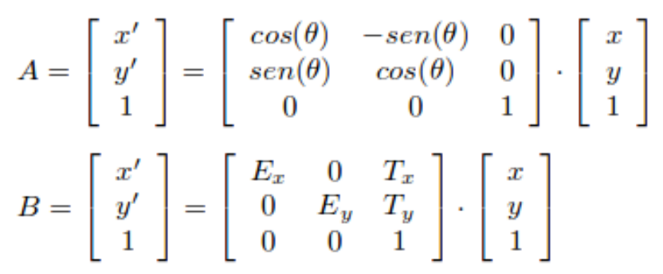
Considere que Ex e Ey são, respectivamente, fatores de escala em x e y, que Tx e Ty são, respectivamente, fatores de translação em x e y e que θ representa um ângulo de rotação. Em relação a essas matrizes, considere as afirmativas a seguir.
I. A matriz de rotação A rotaciona um objeto ao redor do seu centro de massa.
II. A matriz B primeiro translada e depois escala o ponto.
III. A matriz B primeiro escala e depois translada o ponto.
IV. A matriz mudança de base de coordenada em 2D pode ser construída a partir da composição das matrizes homogêneas de translação, rotação e escala.
- a) Somente as afirmativas I e IV são corretas.
- b) Somente as afirmativas I e II são corretas.
- c) Somente as afirmativas II, III e IV são corretas.
- ✓ d) Somente as afirmativas III e IV são corretas.
- e) Somente as afirmativas I, II e III são corretas.
[POSCOMP 2009] Considere a transformação T ilustrada abaixo, que mapeia a figura da esquerda na figura da direita.
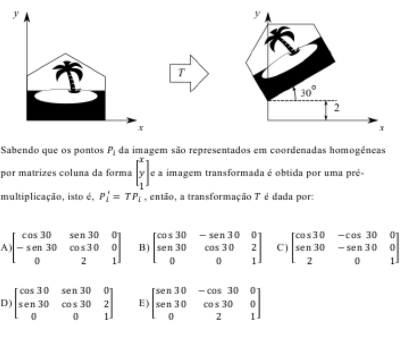
- a) Matriz D
- b) Matriz C
- c) Matriz A
- ✓ d) Matriz B
- ✓ e) Matriz E
[POSCOMP 2005, questão 4] Dada a matriz de transformação linear
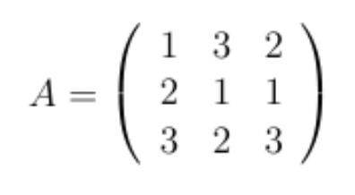
pode-se afirmar que:
- ✓ a) o vetor (0, 1, 0) é mapeado para (3, 1, 2).
- b) o vetor (0, 0, 1) é mapeado para (3, 2, 3).
- c) o vetor (1, 1, 0) é mapeado para (3, 2, 3).
- d) o vetor (1, 0, 0) é mapeado para (1, 3, 2).
- e) o vetor (1, 0, 1) é mapeado para (3, 0, 2).
[POSCOMP 2014 - Questão 57] Sobre a construção de objetos 3D em uma estrutura conhecida na computação gráfica como estrutura de arame, considere as afirmativas a seguir.
I. É necessário obter o conjunto dos vértices de todos os pontos do objeto.
II. É necessário obter o conjunto dos pontos de cada face do objeto.
III. O cálculo da normal de uma face é realizado utilizando 3 pontos da face e a operação de produto vetorial.
IV. O cálculo da normal de uma face é realizado utilizando 3 pontos da face e a operação de produto interno.
- a) Somente as afirmativas I e II são corretas.
- b) Somente as afirmativas I e IV são corretas.
- c) Somente as afirmativas III e IV são corretas.
- d) Somente as afirmativas II, III e IV são corretas.
- ✓ e) Somente as afirmativas I, II e III são corretas.
[POSCOMP 2019] Considerando um sistema de coordenadas no espaço, em uma orientação previamente definida, e sabendo que são conhecidos os vetores (ortogonais entre si) correspondentes aos eixos X e Y, qual é o nome da operação que é capaz de produzir o vetor correspondente ao eixo Z desse sistema – isto é, perpendicular aos outros dois?
- a) Projeção
- b) Produto escalar
- c) Normalização
- d) Translação
- ✓ e) Produto vetorial
Projeções e pipeline de visualização 3D
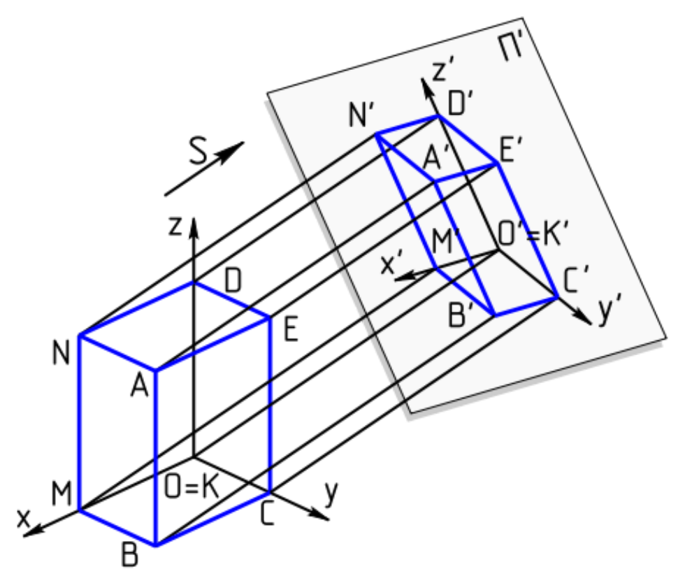
Sobre a projeção paralela é verdadeiro afirmar:
- a) Existem basicamente dois tipos: (a) Projeções Ortogonais e (b) Projeções em Perspectiva
- ✓ b) A técnica de Projeção Paralela comumente utilizada em Computação Gráfica é a Projeção Ortogonal.
- c) A projeção Isométrica é exemplo de Projeções em Perspectiva do tipo Axonométrica (que mantém as dimensões do objeto sobre os eixos)e por isso muito usada em Desenho Técnico e em Engenharia.
- d) Para realizar uma Projeção em Perspectiva, depois de normalizados os dados para o Sistema de Coordenadas da Window, basta ignorar a coordenada Z de cada ponto e você tem uma a projeção 2D dos objetos 3D.
- ✓ e) A projeção Isométrica é exemplo de Projeções Paralelas Oblíquas do tipo Axonométrica (que mantém as dimensões do objeto sobre os eixos) e por isso muito usada em Desenho Técnico e em Engenharia.
- ✓ f) As projeções Cavaleira e Cabinet são exemplos de Projeções Paralelas Oblíquas ou Pictóricas,
- ✓ g) Existem basicamente dois tipos: (a) Projeções Paralelas Ortogonais ou Ortográficas e (b) Projeções Paralelas Oblíquas ou Pictóricas
- ✓ h) Para realizar uma Projeção Paralela Ortogonal, depois de normalizados os dados para o Sistema de Coordenadas da Window, basta ignorar a coordenada Z de cada ponto e você tem uma a projeção 2D dos objetos 3D.
- ✓ i) Na projeção paralela usa-se raios de projeção paralelos e a amplitude do campo de visão não se modifica com a distância ao Plano de Projeção (à Window), é por isso que o tamanho aparente dos objetos não varia de acordo com a distância.
- j) Na projeção paralela usa-se raios de projeção formando uma pirâmide truncada e a amplitude do campo de visão, representada por cortes dessa pirâmide, se adapta com a distância ao Plano de Projeção (à Window), é por isso que o tamanho aparente dos objetos varia de acordo com a distância.
- ✓ k) Na projeção paralela o tamanho aparente dos objetos não varia de acordo com a distância do objeto ao Plano de Projeção (à Window), por isso objetos às vezes se paracem distorcidos neste tipo de representação.
- l) Na projeção paralela o tamanho aparente dos objetos é ajustado fielmente de acordo com a distância do objeto ao Plano de Projeção (à Window), por isso essa técnica de representação é muito usada em Engenharia.
POSCOMP 2016 - QUESTÃO 58 – Assinale a alternativa que descreve corretamente uma característica de transformações de projeção.
- a) Em uma projeção paralela, considera-se que o centro de projeção está a uma distância determinada do plano de projeção.
- b) A projeção perspectiva preserva ângulos e medidas de objetos.
- c) O tamanho da projeção perspectiva de um objeto varia de forma diretamente proporcional a distância desse objeto ao centro de projeção.
- d) Projeções isométricas não são paralelas.
- ✓ e) Uma projeção perspectiva pode ser representada por uma matriz 4x4.
[POSCOMP 2006] Considere o plano definido pelos pontos A(10, 0, 0), B(0, 10, 0) e C(2, 2, 20). A projeção do ponto D(20, 20, 10) sobre o plano dado. segundo a direção de projeção U=(-5, -10, -15) é:
- a) (150/13, 80/13, −200/13)
- b) (300/13, 40/13, −200/13)
- c) (300/13, 80/13, −100/13)
- ✓ d) (150/13, 40/13, −200/13)
- e) (300/13, 40/13, −100/13)
[POSCOMP 2011] Com relação ao processo tradicional de síntese de imagens em computação gráfica, relacione a coluna da esquerda com a coluna da direita.
| (II) Volume de Visualização | (B) Define a porção visível da cena |
| (I) Projeção Perspectiva | (C) Mapeia coordenadas num espaço tridimensional para um espaço bidimensional |
| (V) Rasterização | (E) Encontra as coordenadas de pixel na tela |
| (III) Modelo de Gouraud | (D) Efetua interpolação linear das cores |
| (IV) Algoritmo de Z-buffer | (A) Responsável pela remoção das linhas e superfícies ocultas |
[POSCOMP 2003, questão 50] O pipeline de visualização de objetos tridimensionais reúne um conjunto de transformações e processos aplicados a primitivas geométricas. Sobre essas transformações e processos pode-se dizer que:
I Os objetos devem corresponder a sólidos.
II As coordenadas dos vértices sofrem transformação de acordo com a posição e orientação do observador.
III Um volume de visualização correspondente a um paralelepípedo é determinado pela adoção de projeção perspectiva.
IV A fase final do pipeline corresponde à rasterização dos polígonos.
- a) Apenas a afirmativa IV é falsa.
- ✓ b) Apenas as afirmativas I e III são falsas.
- c) Apenas a afirmativa IV está verdadeira.
- d) As afirmativas II e III são falsas.
- e) Todas as afirmativas são verdadeiras.
[POSCOMP 2010] No processo de síntese da imagem de uma cena tridimensional, também denominado pipeline gráfico, diversas operações são executadas em sequência. O objetivo destas operações é converter as primitivas geométricas que descrevem os objetos da cena em alto-nível, junto com a especificação da câmera sintética, em uma coleção de pixels na tela. Assinale a alternativa que apresenta a sequência correta dessas operações.
- a) Recorte/Projeção/Visibilidade/Rasterização
- b) Projeção/Rasterização/Recorte/Visibilidade
- c) Projeção/Recorte/Visibilidade/Rasterização
- d) Projeção/Recorte/Rasterização/Visibilidade
- ✓ e) Recorte/Projeção/Rasterização/Visibilidade
[POSCOMP 2003, questão 51] O processo de visualização de objetos 3D envolve uma série de passos desde a representação vetorial de um objeto até a exibição da imagem correspondente na tela do computador pipeline 3D). Selecione a alternativa abaixo que reflete a ordem correta em que esses passos devem ocorrer.
- a) Nenhuma das respostas acima está correta
- b) Projeção, transformação de câmera, recorte 3D, mapeamento para coordenadas de tela, rasterização.
- ✓ c) Transformação de câmera, recorte 3D, projeção, mapeamento para coordenadas de tela, rasterização.
- d) Transformação de câmera, mapeamento para coordenadas de tela, recorte 3D, rasterização, projeção.
- e) Recorte 3D, transformação de câmera, rasterização, projeção, mapeamento para coordenadas de tela
NO PROCESSO DE VISUALIZAÇÃO TRIDIMENSIONAL, A REGIÃO DO UNIVERSO QUE SERÁ RECORTADA E PROJETADA SOBRE O PLANO É:
- a) PROJEÇÃO PERSPECTIVA
- b) SISTEMA DE REFERÊNCIA DE CÂMERA
- ✓ c) VOLUME DE VISÃO
- d) PLANO DE RECORTE FRONTAL
- e) OBSERVADOR
AS ETAPAS ABAIXO FAZEM PARTE DO PROCESSO DE VISUALIZAÇÃO TRIDIMENSIONAL:
1 - TRANSFORMAÇÃO NORMALIZANTE E RECORTE
2 - TRANSFORMAÇÃO DE VISUALIZAÇÃO (CAMERA)
3 - TRANSFORMAÇÃO DE MODELAGEM
4 - TRANSFORMAÇÃO DE JANELA DE VISÃO (VIEWPORT)
5 - TRANSFORMAÇÃO E PROJEÇÃO
A ORDEM ESTÁ CORRETA QUANDO ELAS SÃO REALIZADAS NO PROCESSO É:
- a) 2 - 3 - 4 - 1 - 5
- b) 1 - 3 - 2 - 4 - 5
- c) 2 - 1 - 4 - 5 - 3
- ✓ d) 3 - 2 - 5 - 1 - 4
- e) 3 - 5 - 2 - 1 - 4
[POSCOMP 2004, questão 59] Considerando o pipeline de visualização 3D e o equacionamento da câmera sintética, indique qual das afirmações abaixo está correta:
- a) A transformação de câmera é a operação responsável pelo mapeamento de objetos 3D no espaço 2D
- b) Considerando w como sendo o vetor da base que determina a direção do eixo z da câmera, pode-se afirmar que w é sempre obtido a partir da posição da câmera e da origem do SRU
- ✓ c) A transformação de câmera pode ser representada como uma seqüência de transformações geométricas aplicadas ao conjunto de vértices que definem os objetos geométricos de uma cena
- d) As coordenadas dos objetos da cena, após a transformação de câmera, são relativas ao ponto indicado como posição do observador
- e) A transformação de câmera corresponde à última etapa do pipeline de visualização 3D
Curvas e superfícies
[POSCOMP 2015 - Questão 58] Considere a expressão a seguir
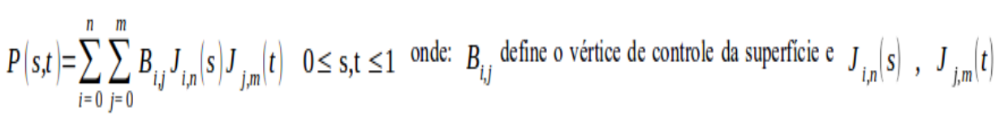
são as as funções de Bernstein, respectivamente, nas direções s e t. De qual superfície pode ser obtido um ponto qualquer pela expressão apresentada?
- a) Superfície B-Spline
- b) Superfície Racional
- c) Superfície de Hermite
- ✓ d) Superfície de Bézier
- e) Superfície Paramétrica Bicúbica
Iluminação, shading, raytracing e radiosidade
O Modelo de Phong é:
- a) As componentes do modelo de Phong são: Luz Direta, Luz Transparente e Luz Especular
- ✓ b) As componentes do modelo de Phong são: Luz Direta (ou Difusa), Luz Especular e Luz Ambiente (ou Indireta)
- c) As componentes do modelo de Phong são: Luz Direta, Luz Difusa, Luz Especular (ou Transparente) e Luz Ambiente
- ✓ d) Um modelo de iluminação que trabalha com 3 componentes aditivas.
- e) Um modelo de iluminação que trabalha com 4 componentes multiplicativas.
- f) Um modelo de iluminação que trabalha com 4 componentes aditivas.
- g) Um modelo de iluminação que trabalha com 3 componentes multiplicativas.
- h) As componentes do modelo de Phong são: Luz Direta, Luz Difusa, Luz Indireta e Luz Ambiente
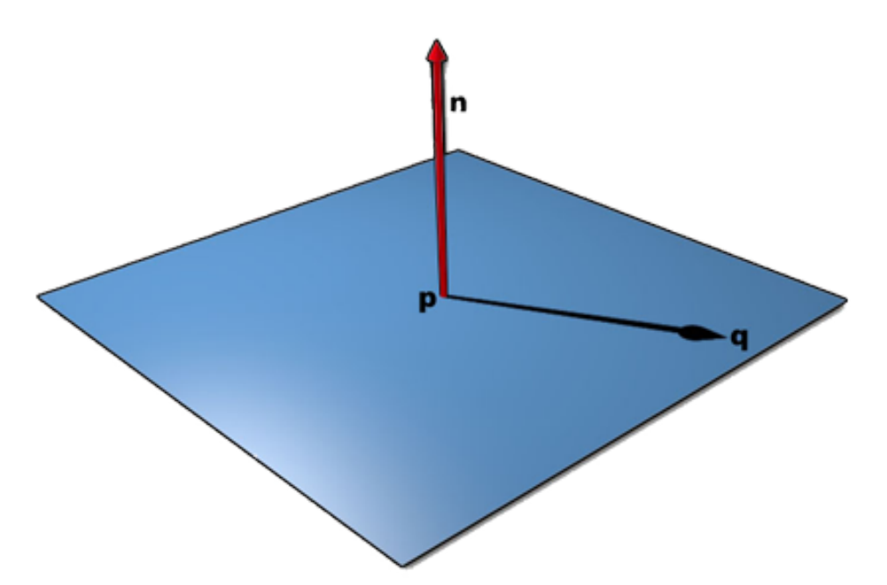
Calcular as normais às facetas que compõem a superfície de um objeto 3D é importante para renderizar a sua aparência porque:
- a) Permite identificar a orientação de uma faceta e assim saber se vai estar na sombra de outro objeto ou não.
- b) Permite calcular a diferença de orientação entre facetas e assim determinar a curvatura de um meshe.
- c) Permite a construção mais eficiente de octrees para determinação de colisões entre objetos em uma cena.
- d) Permite calcular a o ângulo de incidência da luz direta recebida por aquele ponto da superfície, e assim, calcular a sua transparência.
- ✓ e) Permite calcular a intensidade da iluminação difusa direta recebida por aquele ponto da superfície, e assim, calcular a sua iluminação.
- f) Permite calcular a o ângulo de incidência da luz direta recebida por aquele ponto da superfície, e assim, calcular a sua translucência.
- ✓ g) Permite calcular a intensidade do reflexo especular produzida por aquele ponto da superfície, e assim, calcular o quão brlhante ou espelhado ele será.
- h) Permite calcular a intensidade da luz ambiente indireta recebida por aquele ponto da superfície, e assim, calcular a sua iluminação.
Em Computação Gráfica os termos Radiância e Radiosidade dizem respeito a:
- ✓ a) São métodos de iluminação global realista de uma cena que modelam a inter-reflexão difusa entre os objetos da cena, representando interações luminosas e reflexos entre objetos.
- b) São métodos para calcular a luz própria emitida por um objeto utilizando-se o modelo da física da equação do corpo negro.
- c) São métodos para calcular a luz própria não puntual emitida por um objeto luminoso extenso utilizando-se o modelo da física da equação do corpo negro.
- d) São métodos de iluminação global realista de uma cena que modelam a Dispersão de Rayleigh e sua interação em toda a cena.
- e) São métodos de iluminação global realista de uma cena que modelam Raios Umbrais e sua interação em toda a cena.
- f) São métodos de iluminação global realista de uma cena que modelam Raios Crepusculares e sua interação em toda a cena.
- g) São métodos de iluminação global realista de uma cena que modelam a dispersão (scattering) da luz, como o efeito Tindall (fumaça) e névoa.
- h) São métodos para calcular a luz própria não puntual emitida por objetos luminosos extensos irradiando entre 2600ºK e 6000ºK.
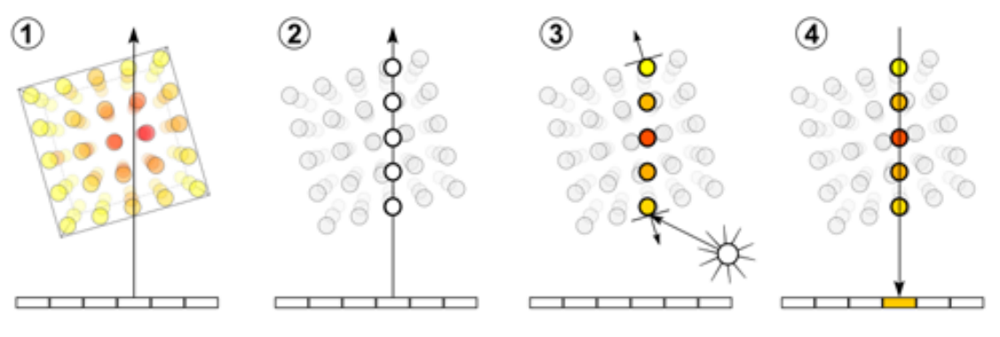
Um programa de computador/módulo usado para síntese (renderização) de imagens baseado na simulação do trajeto que raios de luz disparados para dentro de um volume de dados 3D percorreriam (dados densos), calculando visualizações 2D desses conjuntos de dados volumétricos 3D e colorindo-os com uma combinação das cores dos vóxeis por onde passam, permitindo visualizar, por exemplo, dados de radar, tomografias computadorizadas ou ressonâncias magnéticas. Estamos falando de um:
- a) Ray Tracer Volumétrico
- b) Processador de Anti-Aliasing Volumétrico
- c) Ray Shader Volumétrico
- d) Modelo de Phong Denso
- ✓ e) Ray Caster Volumétrico
- f) Iluminador Global ou Processador de Radiosidade Densa
Um programa de computador/módulo usado para realizar a produção de níveis de cor e iluminação apropriadas para os píxeis de uma imagem ou produzir efeitos de reflexo e transparência. Tipicamente codificado para e executado na GPU. Estamos falando de um:
- a) Modelo de Phong
- ✓ b) Pixel Shader ou Ray Shader
- c) Processador de Anti-Aliasing
- d) Ray Tracer
- e) Iluminador Global ou Processador de Radiosidade
- f) Ray Caster
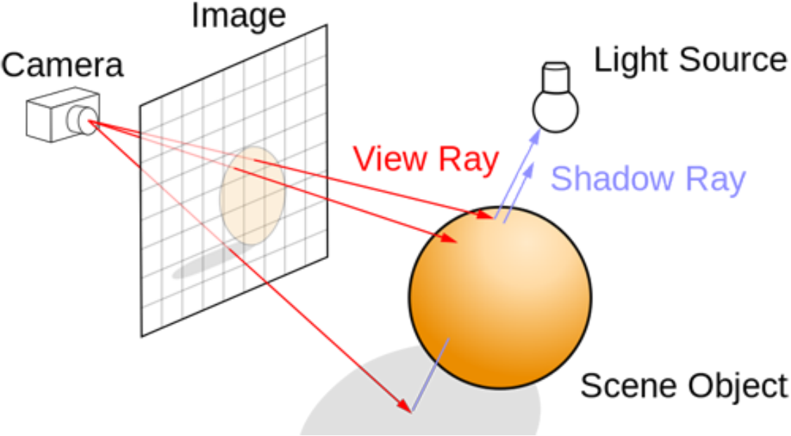
Um programa de computador/módulo usado para síntese (renderização) de imagens tridimensionais baseado na simulação do trajeto que os raios de luz percorreriam no mundo real, mas, neste caso, de trás para a frente. O algoritmo consiste em projetar, a partir do observador, um raio para cada um dos pixeis constituintes da viewport, vetor este que irá intersectar os objectos que formam a cena em análise. Estamos falando de um:
- a) Modelo de Phong
- ✓ b) Ray Tracer
- c) Ray Caster
- d) Processador de Anti-Aliasing
- e) Iluminador Global ou Processador de Radiosidade
- f) Pixel Shader ou Ray Shader
[POSCOMP 2004, questão 60] A técnica de iluminação denominada ray-tracing
- a) apesar de possuir uma fase de pré-processamento custosa, onde é montada uma estrutura de árvore de iluminação, é bastante eficiente em situações em que a câmera se move e as fontes de luz e os objetos permanecem estáticos
- b) determina o grau de visibilidade de superfícies traçando raios de luz imaginários partindo de todos os vértices que definem as superfícies dos objetos da cena
- ✓ c) utiliza o modelo de iluminação local de Phong no cálculo parcial da iluminação
- d) se baseia no cálculo recursivo da iluminação transmitida e refletida por cada objeto, sendo que sua eficiência aumenta a medida em que aumenta o nível de transparência dos objetos envolvidos
- e) considera a interação entre os objetos da cena no cálculo da iluminação, mas só funciona com uma única fonte de luz
[POSCOMP 2010, questão 52] Considere as afirmativas a seguir:
1. O modelo de iluminação de Phong obtém as cores internas aos polígonos por interpolação das cores nos vértices.
2. A técnica de z-buffer utiliza ordenação de primitivas para determinação dos pixels visíveis.
3. O ponto (2,1,3,2), expresso em coordenadas homogêneas, equivale ao ponto (1.0, 0.5, 1.5) em coordenadas cartesianas tridimensionais.
4. Uma das principais vantagens da representação de objetos como malhas poligonais triangulares é a garantia de que todas as faces são planares.
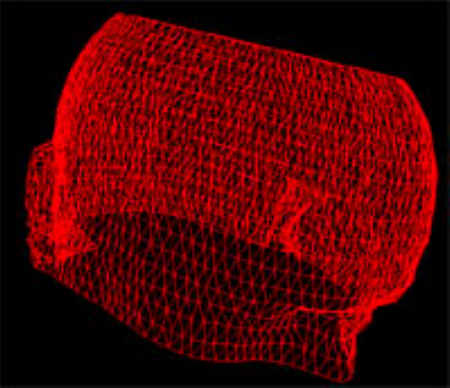
- ✓ a) Somente as afirmativas 3 e 4 são corretas.
- b) Somente as afirmativas 2,3 e 4 são corretas.
- c) Somente as afirmativas 1 e 4 são corretas.
- d) Somente as afirmativas 1,2 e 3 são corretas.
- e) Somente as afirmativas 1 e 2 são corretas.
[POSCOMP 2010] A correta tonalização de um poliedro requer que vetores normais à sua superfície sejam definidos em cada ponto de sua malha. Para tonalizar uma esfera definida parametricamente por p(u, v) = [cos(u)sin(v), cos(u)cos(v), sin(u)]ᵀ, onde u varia entre [−π/2, π/2] e v varia entre [−π, π], é preciso descobrir a forma implícita de sua normal n(u, v).
Como ela é definida?
- a) n(u, v) = 1/p(u, v)
- b) n(u, v) = 2p(u, v)
- c) n(u, v) = −cos(v)p(u, v)
- d) n(u, v) = cos(u)p(u, v) + cos(v)p(u, v)
- ✓ e) n(u, v) = cos(u)p(u, v)
[POSCOMP 2011] Em cenas de computação gráfica, para aumentar o realismo visual, é comum aplicar-se um modelo de iluminação local que calcula as cores nos vértices dos triângulos a partir das propriedades de reflexão do objeto, propriedades geométricas do objeto e propriedades da(s) fonte(s) de luz. Sobre os modelos de iluminação locais, considere as afirmativas a seguir.
- ✓ a) A parcela de luz ambiente aproxima as múltiplas reflexões de luz das inúmeras superfícies presentes na cena.
- b) A parcela de reflexão difusa depende da posição do observador.
- ✓ c) A parcela difusa ideal de iluminação pode ser aproximada pela lei de Lambert, que estabelece que a reflexão difusa de uma superfície é proporcional ao ângulo entre o vetor normal à superfície e o vetor direção da fonte de luz.
- ✓ d) A parcela especular pode ser aproximada pelo modelo de Phong, que estabelece que a reflexão especular de uma superfície é proporcional ao cosseno do ângulo entre o vetor direção do observador e o vetor que estabelece a direção de reflexão especular ideal.
Como se denomina uma fonte de luz que esteja a uma distância infinita de uma cena, gerando uma iluminação similar à da luz do Sol?
- a) Ambiente.
- b) Pontual.
- ✓ c) Direcional.
- d) Difusa.
- e) Spot.
[POSCOMP 2005, questão 46] No que diz respeito a geração de imagens por RayTracing, qual das afirmações a seguir não é verdadeira?
- ✓ a) O número de raios lançados independe do número de objetos da cena.
- b) O lançamento de raios é dependente da posição da câmera.
- c) A refração e a reflexão da luz precisam ser tratadas neste método.
- d) Em algumas variações do método, o cálculo das sombras é feito a parte.
- e) Este método pode ser facilmente paralelizado.
[POSCOMP 2015 - Questão 57] Simular a propagação da luz no ambiente, avaliando a sua interação com os objetos que o compõem e considerando a interação da luz com as suas superfícies, é o objetivo da técnica do algoritmo.
- ✓ a) Ray Tracing
- b) Bresenham
- c) Sutherland Hodgman
- d) Boundary-Fill
- e) Cohen-Sutherland
Rasterização, z-buffer, aliasing e texturas
[POSCOMP 2012 - Questão 58] Em relação à técnica de antisserrilhado (anti-aliasing) conhecida por Multi Sampling Anti-Aliasing (MSAA) e considerando o pipeline gráfico de rasterização, assinale a alternativa correta.
- a) A técnica exige dois passos de rasterização, um para marcar o mapa de profundidade e outro para a definição das cores dos píxeis.
- b) A técnica não é capaz de reduzir o serrilhado proveniente das cores das texturas mapeadas sobre malha de triângulos.
- c) A distribuição de amostras deve ser regular, por exemplo, deve seguir uma distribuição com formato matricial.
- d) As primitivas geométricas devem ser rasterizadas de forma ordenada, começando pela mais distante até a mais próxima da câmera virtual.
- ✓ e) Uma das características da técnica é reutilizar informações capturadas da cena por uma amostra na computação de outras amostras, por exemplo, iluminação.
[POSCOMP 2003, questão 49] Sobre a técnica conhecida como Z-buffer é correto afirmar que:
- a) As primitivas geométricas precisam estar ordenadas de acordo com a distância em relação ao observador.
- ✓ b) É possível realizar o cômputo das variáveis envolvidas de forma incremental.
- c) É uma técnica muito comum de detecção de colisão.
- d) As dimensões do Z-buffer são independentes das dimensões do frame buffer.
- e) Nenhuma das alternativas acima está correta.
[POSCOMP 2013 - Questão 56] Em relação à Computação Gráfica, considere as afirmativas a seguir.
1. Dada uma malha de triângulos que aproxima uma esfera, a suavidade da iluminação gerada pelo algoritmo de Gouraud depende da resolução da malha.
2. Na projeção paralela, o volume de visualização é retangular.
3. O algoritmo de Bresenham é um algoritmo de rasterização de linhas.
4. O efeito de serrilhado (aliasing) não ocorre na rasterização de malhas de triângulos bidimensionais. Assinale a alternativa correta (POSCOMP 2013 - Questão 56).
- ✓ a) Somente as afirmativas I, II e III são corretas.
- b) Somente as afirmativas I e II são corretas.
- c) Somente as afirmativas II, III e IV são corretas.
- d) Somente as afirmativas I e IV são corretas.
- e) Somente as afirmativas III e IV são corretas.
A TÉCNICA DE MAPEAMENTO DE TEXTURA BASEADA NA APLICAÇÃO DE UMA FUNÇÃO DE PERTURBAÇÃO NO VETOR NORMAL DA SUPERFÍCIE, DE FORMA QUE A ILUMINAÇÃO DESSA SEJA AFETADA, É DENOMINADA:
- ✓ a) BUMP MAPPING
- b) TEXTURA PROCEDURAL
- c) TEXTURA SÓLIDA
- d) ENVIRONMENT MAPPING
- e) FRAME MAPPING
[POSCOMP 2012] Suponha uma cena tridimensional composta apenas por duas esferas contidas no volume de visualização. Uma dessas esferas está completamente encoberta pela outra em relação à visão da câmera virtual que utiliza projeção paralela. Com base no enunciado e nos conhecimentos sobre o tema, assinale a alternativa correta (POSCOMP 2012 - Questão 55).
- a) O modelo de iluminação de Gouraud descreve a sombra vinda de uma das esferas sobre a outra.
- b) A esfera encoberta pode ser maior que a esfera visível, basta que uma esteja na frente, em relação à visão da câmera, e suficientemente distantes entre si.
- ✓ c) Utilizando o algoritmo de Z-Buffer, a imagem resultante, após a rasterização de ambas as esferas, é a mesma, independentemente de qual esfera é rasterizada primeiro.
- d) Os algoritmos de remoção de superfícies ocultas não são úteis na situação descrita, pois ambas as esferas estão dentro do volume de visualização.
- e) No modelo de iluminação de Phong, a iluminação de uma das esferas depende da cor da segunda esfera.
[POSCOMP 2015 - Questão 70] MeshSmooth, Bump Map, Flat Shading são, respectivamente, tipos de:
- a) Textura, Método de Renderização, Modificador
- ✓ b) Modificador, Textura, Método de Renderização.
- c) Método de Renderização, Textura, Modificador.
- d) Modificador, Método de Renderização, Textura
- e) Textura, Modificador, Método de Renderização.
[POSCOMP 2008] Dada a seguinte função escrita na linguagem de programação C:
void _________(int xi, int yi, int xf, int yf, int cor) {
int x, y;
float a;
a = (yf - yi) / (xf - xi);
for (x = xi; x <= xf; x++) {
y = (yi + a * (x - xi));
putpixel(x, y, cor);
}
}Considere que a função putpixel plota um pixel de cada vez na tela em modo gráfico, na posição (x, y) com a cor especificada. Essa função plota na tela do computador:
- a) um retângulo.
- ✓ b) uma linha.
- c) um triângulo.
- d) uma elipse.
- e) um círculo.
[POSCOMP 2013 - Questão 60] Em Computação Gráfica, a técnica mipmap objetiva reduzir o custo computacional e o efeito de serrilhado (aliasing) durante a rasterização de superfícies com mapeamento de textura. Isso é feito com base em um pré-processamento, por textura, que resulta em um acréscimo no consumo de memória.
Indique, através de um número inteiro de 0 a 400 (significando de 0% a 400%), indicando, em termos percentuais, qual o consumo adicional de memória causado pelo mipmap além memória já ocupada pela textura original.
[POSCOMP 2006, questão 49] Considere as afirmações abaixo:
I. Um terminal raster apresentará o efeito "pisca-pisca" quando a cena for muito complexa.
II. Uma célula de vizinhança 4 no algoritmo de boundary-fill sempre preenche a região interior completamente quando a borda da região de preenchimento tiver largura de 2 pixels.
III. No algoritmo do ponto médio para traçado de círculos, se f(xM,yM) = r2 - x2 - y2 < 0, o ponto (xM,yM) é interior à circunferência
IV. Em uma cena composta apenas de objetos convexos, a eliminação de superfícies ocultas restringe-se à remoção das faces posteriores (back faces).
V. No mapeamento janela-viewport, mantendo-se a viewport fixa e aumentando-se o tamanho da janela provoca-se o efeito de zoom-in.
- a) Apenas II - IV - V são verdadeiras
- b) Apenas I - II - III são verdadeiras
- ✓ c) Todas são falsas
- d) Todas são verdadeiras
- e) Apenas I - II são verdadeiras.
APIs, engines e outros
O conceito de Entity Component System (ECS) diz respeito à:
- a) O modelo de herança utilizado em APIs gráficas como OpenGL e WebGL.
- b) A técnica de usar grafos em editores de programação visual de Game Engines para a representação da arquitetura de dados e funções.
- c) O modelo de polimorfismo utilizado em APIs gráficas como OpenGL e WebGL.
- d) Padrão de arquitetura de modelagem de dados utilizado por Game Engines onde se dá preferência a herança e polimorfismo em detrimento de agregação e objetos compostos.
- ✓ e) Padrão de arquitetura de modelagem de dados utilizado por Game Engines onde se dá preferência a agregados em detrimento de herança e polimorfismo.
Um pacote de software que tipicamente inclui: um motor gráfico para renderizar gráficos 2D e/ou 3D, um motor de física para simular a física ou simplesmente para fazer detecção de colisão, suporte a animação, sons, inteligência artificial, networking, gerência de memória, gerência de arquivos, gerência de linha de execução, suporte a grafos de cena e entidades e suporte a uma linguagem de script é um:
- a) Pacote de Modelagem Tridimensional
- b) APK do OpenGL
- c) API gráfica de última geração
- ✓ d) Game Engine ou Motor de Jogo
- e) APK do WebGL
Uma Biblioteca ou API Gráfica é uma biblioteca de programas projetada para auxiliar na renderização de conteúdo gráfico para apresentação em um monitor. Tipicamente envolve o provimento de funções altamente otimizadas paraa realização de tarefas de desenho comuns, servindo também para gerar código executável em GPUs. São exemplos de APIs gráficas utilizadas na atualidade:
- a) Blender, Moray e POVRay
- b) OpenGL, WebGL e DirectX
- ✓ c) OpenGL, WebGL e Direct3D
- d) OpenGL, Direct3D e DirectX
- e) Blender, Unity e OpenGL
[POSCOMP 2007] Dado o seguinte trecho de um programa escrito em C:
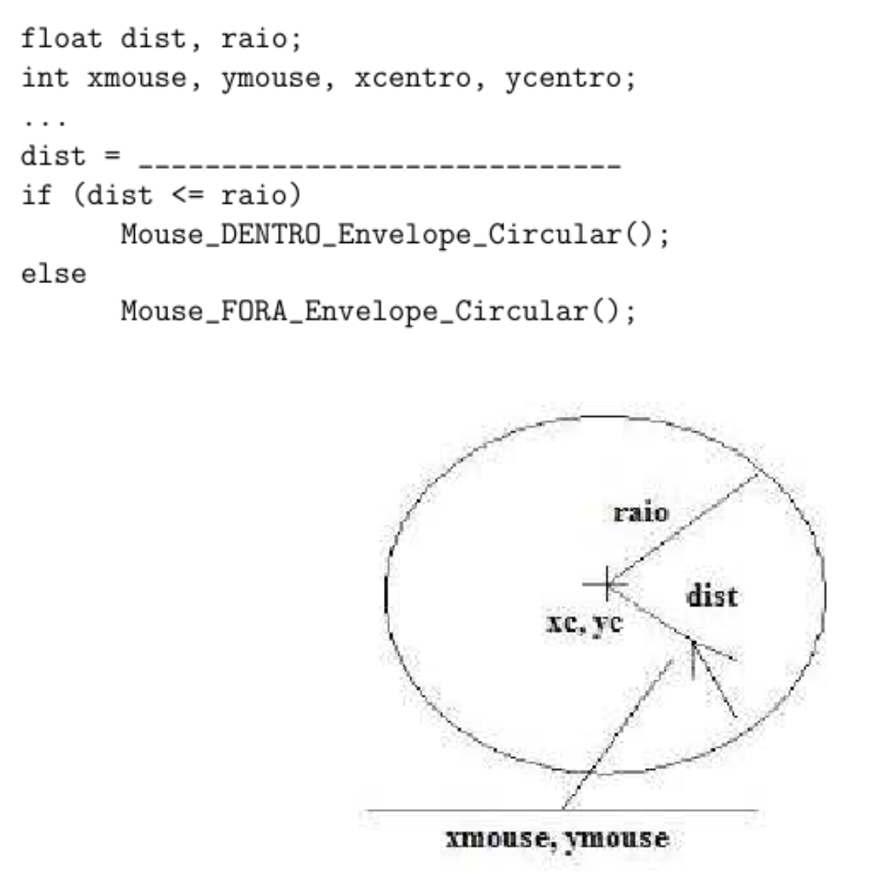
Considere que um sistema gráfico utiliza envelope circular para localizar objetos em sua interface gráfica. O programador está utilizando o trecho de programa descrito acima para verificar se o usuário está apontando o mouse para um dos objetos. Para tanto, ele utiliza o cálculo da distância entre dois pontos. Assinale a alternativa que indica corretamente como á calculada a distância (dist) entre dois pontos.
- a) sqrt((xmouse-xcentro)-(ymouse-ycentro))
- b) sqrt((xmouse-xcentro)+(ymouse-ycentro))
- c) sqrt((xcentro-xmouse)+(ycentro-ymouse))/2
- ✓ d) sqrt(pow(xmouse-xcentro,2)+pow(ymouse-ycentro,2))
- e) sqrt(pow(xmouse-xcentro,2)-pow(ymouse-ycentro,2))
[POSCOMP 2013 - Questão 58] Relacione as técnicas de Computação Gráfica, na coluna da esquerda, com as suas funções, na coluna da direita.
| BSP | Subdivisão espacial |
| Cohen-Sutherland | Recorte |
| Bézier | Aproximação de curvas |
| Algoritmo do pintor | Remoção de superfícies ocultas |
| Phong | Iluminação |
Processamento de imagens (POSCOMP)
[POSCOMP 2004] Considerando as declarações abaixo, é incorreto afirmar:
- ✓ a) Os filtros Gaussiano e Laplaciano são exemplos de filtro passa-baixas
- b) O filtro da mediana pode ser utilizado para redução de ruído em uma imagem
- c) Filtros passa-altas são utilizados para detecção de bordas em imagens
- d) A transformada discreta de Fourier nos permite obter uma representação de uma imagem no domínio freqüência
- e) Filtragem no domínio espacial é realizada por meio de uma operação chamada “convolução”
[POSCOMP 2004] Identifique a declaração incorreta:
- a) A transformação necessária para calcular o negativo de uma imagem pode ser aplicada simultaneamente (i.e., em paralelo) a todos pixels da imagem original
- b) A equalização de histograma pode ser obtida a partir de um histograma cumulativo da imagem original
- c) A equalização de histograma é uma transformação não-linear e específica para cada imagem
- d) As operações de ajuste de brilho e contraste são operações lineares
- ✓ e) O objetivo da equalização de histograma é reduzir o constrastre nas regiões da imagem que correspondem à porção do histograma com maior concentração de pixels
[POSCOMP 2009] Sobre o conceito de segmentação de imagens, é CORRETO afirmar:
- a) Nenhuma das opções acima.
- b) Operação que objetiva particionar uma imagem em um conjunto de regiões de mesmo tamanho.
- c) Processo que objetiva identificar objetos na imagem de acordo com uma descrição prévia com base em uma ou mais características (brilho, tons de cinza, cor, textura)
- d) É a mesma coisa que detecção de bordas de imagens.
- ✓ e) Processo que agrupa partes de uma imagem em regiões homogêneas com respeito a uma ou mais características (brilho, tons de cinza, cor, textura).
[POSCOMP 2006] Quando se aplica um filtro passa-baixas (low-pass filter) a uma imagem com dimensões 100x100 em tons de cinza (grayscale) com todos os pixels na cor preta, a imagem resultante:
- a) Nenhuma das afirmações acima é correta
- b) Fica reduzida à metade das dimensões da imagem original
- c) Tem as mesmas dimensões da imagem original, com todos os pixels na cor branca
- ✓ d) Tem as mesmas dimensões da imagem original, com todos os pixels na cor preta
- e) Fica ampliada ao dobro das dimensões da imagem original